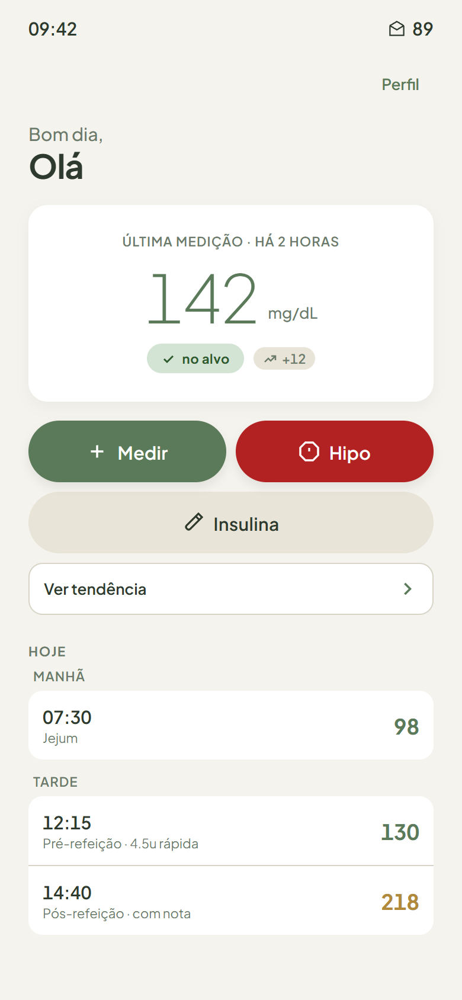
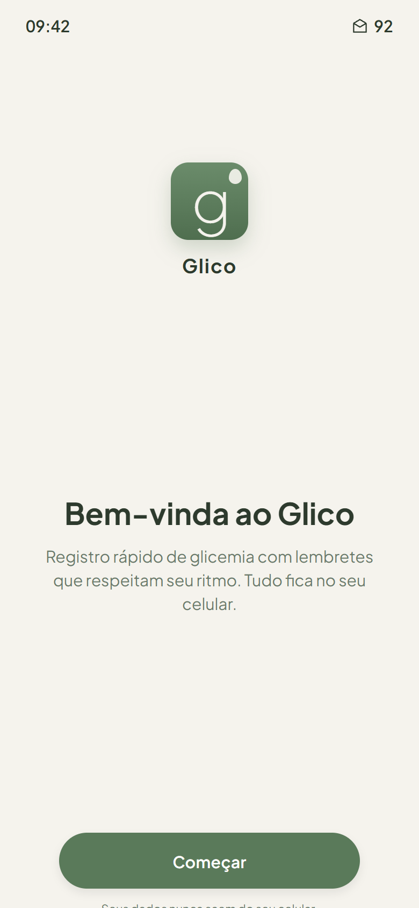
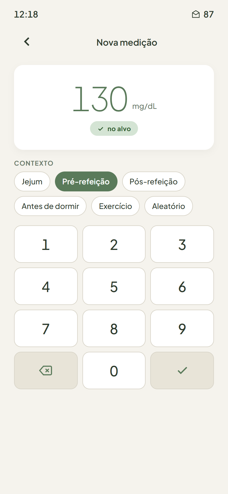
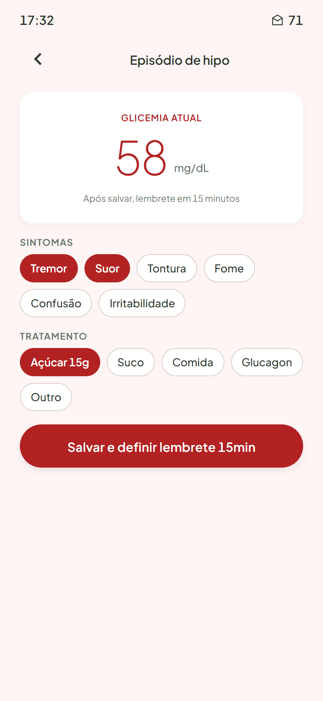
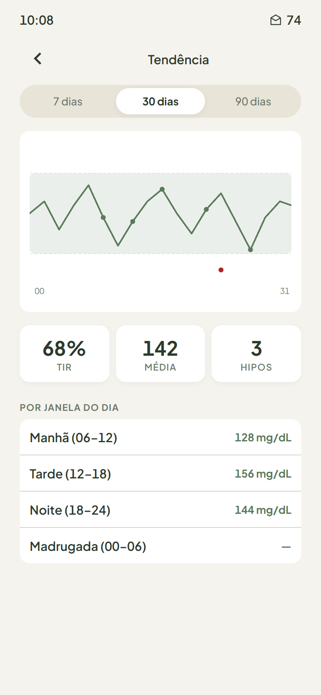
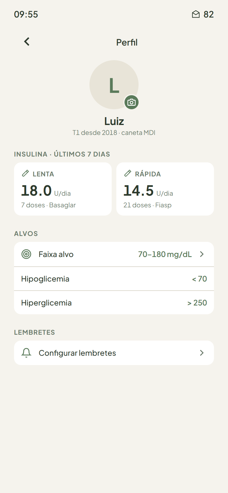

Glico é um aplicativo offline-first para diabetes tipo 1. Registre medições em dois toques, acompanhe sua tendência, compartilhe um relatório claro com seu médico — sem que seus dados saiam do celular.

UI Sage Calm: verde sálvia, bege quente, tipografia leve.





Keypad customizado, contexto pré-selecionado pelo lembrete que abriu a tela. Sem teclado nativo lento.
Os lembretes silenciam automaticamente se você já mediu na janela próxima. Em segundo plano e em primeiro plano.
Gráfico com sua faixa alvo, tempo no alvo, média e variabilidade. Quebrado por janela do dia.
Termos do dia a dia primeiro: rápida (bolus) e lenta (basal). Marcas comuns no Brasil em chips, com sua última escolha lembrada.
Botão dedicado, lembrete automático em 15 minutos para remedir. Registro de sintomas e tratamento.
Exporta últimos 14 ou 30 dias com tabela, gráfico e episódios de hipo. Pronto para imprimir ou enviar por mensagem.
Glico é offline-first por construção. Nenhuma medição, dose ou nota é enviada para qualquer servidor. Não há contas, login, telemetria ou crash reporting.
.json cifrado com AES-256-GCM e PBKDF2-SHA256.Glico não é um dispositivo médico. Não diagnostica, não calcula doses, não substitui orientação clínica. Em emergências, procure atendimento profissional.